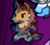
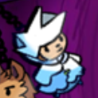
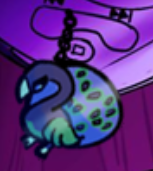

Principais desafios

Phuny: pânico
Representa os medos e dúvidas iniciais de Lenin, simbolizando suas incertezas e falta de direção.

Dimitri: sonolência
Este boss reflete as inseguranças internas de Lenin, forçando-o a enfrentar suas próprias fraquezas.

Amir e Liane: ansiedade
Uma figura que simboliza a pressão de se conformar às expectativas sociais e familiares.

Devanir: autoestima
O confronto final, que representa o peso esmagador da depressão e a necessidade de superá-la.